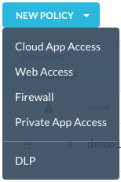
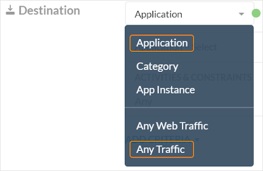
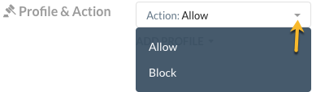

Real-time Protection Policies
The Netskope proxy accepts HTTP and HTTPS traffic destined for port 80 and 443 respectively but enhancements to the proxy can now handle non-standard ports for HTTP and HTTPS traffic.
Tip
You may see other options available to you in the UI menu options. You can use them in conjunction with the Cloud Firewall policies but they are not required.
This capability provides the ability to configure allow / block security policies based on source and destination IP addresses, ports, and protocols.
This type of egress firewalling allows admins to:
Prevent command and control type of of malware from exfiltrating data out of your network
Blocks unwanted internet services from being used by all or specific users due to legal and / or compliance rules
Provides awareness of any authorized and unauthorized activity on the network by logging all network events
It enables fast and secure local internet breakouts for all ports and protocols, without any appliances to upgrade or deploy, all with unified management. Policies do not have to be tied to a physical location. Instead, policies adhere to a follow-the-user type model and provide identical protection no matter what device the user is using, or where they connect from. These policies are flexible and this is useful because Netskope can enable a more stringent policy as needed if a user is off premises or at a different location such as a risky country.
To get started, go to: Policies > Real-time Protection.
This pages shows:
Name of each policy.
The source (traffic criteria) for the policy.
The destination for each app the policy monitors.
The current action applied to each policy.
The number of alerts generated by the policy in the last 30 days.
Default behaviors are listed at the bottom of the policy page. You can edit the Non-Web traffic from this page, click the pencil icon to change the action.
For a more detailed view of each policy, click the name of the policy.
Policy details provide information about:
Traffic Criteria: Traffic Criteria are sorted into 'Source' and 'Destination.' Netskope will show the most appropriate criteria based on the application selected for 'Destination.'
Profile and Action: The action is performed when the traffic criteria and profile are both matched.
If the 'Destination' column of the policy has 'Firewall App Definitions' then it is a firewall policy. Typically the firewall app definition is enclosed within '[ ]'. Additionally, if the 'Destination' column lists 'Any Traffic' then it is also considered a firewall policy.
Firewall Policy Order
The firewall policy is applied based on the order (Rule ID in image below). Any other non-firewall policies will not affect the firewall traffic. The numbering sequence is irrespective of the policy type. For firewall traffic, only firewall policies will be considered and the system skips the in between numbers which are non-firewall policies.
Additional menu options for editing a policy
You can edit the policy by clicking the three dots to the far right of the policy name. A menu opens that enables you to edit, view alerts, move policies, disable, clone, and delete policies.

Searching for a policy
You can search for a specific policy by typing the name in the search box. The policies that match closely to your search text are filtered in the Policies list. Optionally, you can select the Show Matched Policies Only checkbox which further filters your policy list to display only the policies that precisely match your search text.
The Real-time Protection Policies page also allows you to use search filters to find policies for specific users, apps, websites, and firewalls.
 |
To use the search filters, click the filter icon to apply one or more of these filters:
User: Find policies that detect specific users.
Action: Find policies that take a certain action, like block or encrypt.
Network Location: Look up and filter by a specific or multiple network location(s).
Application: Look up and filter by a specific application.
The Real-time Protection Policies list page by default displays 25 rows. To change your view, select the option from the bottom right of the page (options include: 25, 50, 100, 150).
You can view the list page in Default or Custom table view. From the Custom table view, you can customize the columns or restore the default view. To access the Customize Columns window, click the gear in the upper right corner of the table while in Custom table view.

Create a Real-time Protection Policy: Firewall
Policies are defined using a set of variables. These variables define the criteria for detecting policy violations.
To create a Real-time Protection policy:
Important
You must set the Destination field first and then the Source field. This is required because if you select the Source before Destination, the Source is deleted / reset.
On the Real-time Protection Policies page, click New Policy > Firewall. When creating a new policy, select a template that most resembles your goal. No matter the choice, you can edit as you work through the policy creation workflow. Choosing a template means some fields are auto-populated for efficiency. You may see other options as shown below, but only Firewall applies to this workflow.
Select Destination > Application or Any Traffic to set up a firewall policy. For Destination, click Application to switch among Application or Any Traffic. Other options may be visible but these do not apply to setting up a firewall policy. These options allow you to write a specific policy against a few applications or instances, or a generic policy against entire categories of applications or type of traffic.
Note
To add the firewall application you created as part of Settings > Security Cloud Platform > Traffic Steering > App Definition, select Application.
The Any Traffic option makes the firewall allow / block any traffic (only source IP will be applicable and destination IP is ignored).
Select the Source. Click in the text box to select Source IP User or a user ID (email address). The system will show the most appropriate criteria based on your policy template selection.
The Source IP is set to 'Matches' by default. This means the policy engine will match against the criteria. The Source field can be left blank. If left blank, it implies that the source IP is set to 'Any'.
The user ID must already exist in the system or ensure you add the new user. Refer to the Add Users topic for help. The app firewall learns the user ID (email address) and corresponding user IP address and caches this mapping. When the system sees traffic from this user IP, it uses this mapping and finds the associated user. This user ID is an additional policy attribute (used with other firewall attributes like IP address, port, protocol, etc.)
Select the action you would like to take, Allow or Block. For firewall policies, these are the only two options which apply.
Enter a name and a policy description.
Important
When creating policy names, only use alphanumeric characters and symbols such as "_" underscore, "-" dash, and "[ or ]" square brackets. You cannot use the greater than ">" and less than "<" symbols in policy names.
Click Save in the upper right corner to save your new policy. All policies are processed in a top-bottom order, meaning the policy that is at the top of the policy table will be processed first followed by the next in the order.

You should see the saved policy in the Policy list page.
You can drag-and-drop the policy name by highlighting the row and moving your cursor to the icon and drag-and-drop the line to the desired location in the list page.
Important
In order to support a Netskope Private Access (NPA) client inside a branch office that reaches an NPA gateway through a GRE tunnel, admins must configure an SSL Decrypt bypass rule in the WebUI for the account as *.goskope.com.
Access the configuration setup page by navigating to Policies > SSL Decryption. If you are not using NPA in your account, no action required.